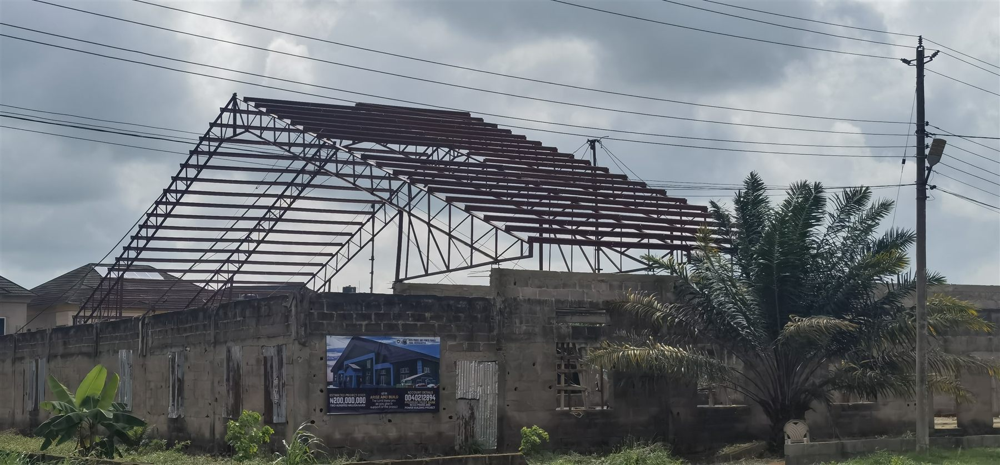
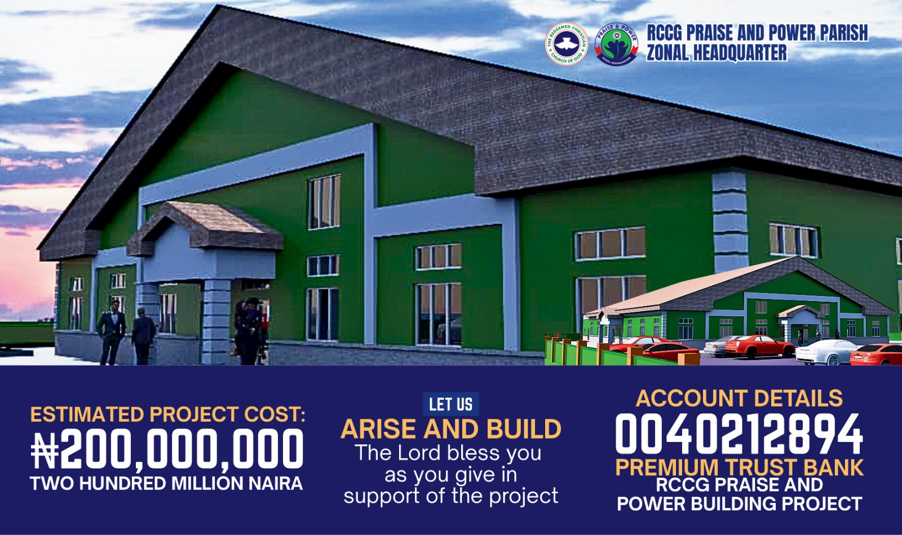

A house for God's glory
Building a home for the next chapter.
More than a structure: a home for revival, a sanctuary for the broken, and a base for transforming our generation.
The vision
Why we are building.
"Unless the Lord builds the house, the builders labour in vain." — Psalm 127:1
For years, we have carried a dream: a permanent home where thousands can encounter the living God. A place where children grow in faith, families find healing, and our community is transformed by the Gospel of Jesus Christ.
This bold step of faith will create a worship centre, support multiple ministry departments, and serve the community throughout the week.
The original project notes describe construction as being in Phase 2, with a 2027 completion target. Project figures below reflect the information last supplied.
A shared vision
Progress, together.
The supplied project update records ₦13,000,000 raised toward a ₦200,000,000 goal.
The journey
Building in faith, phase by phase.
01 · Foundation & structure
The foundation and main structural frame have been laid.
02 · Roofing & walls
Roofing, brickwork, and external finishing are underway.
03 · Interior & furnishing
Auditorium seating, electrical, audio-visual, and interior fit-out.
04 · Dedication
A day of praise and gratitude for God's faithfulness.
See the progress
Construction photos.
Select a photo to see it full size.
Sow into the building
Help build this house.
Every seed brings us a step closer to dedicating this home to God. For transfer details or to support the project, get in touch with the church.
Ask about giving